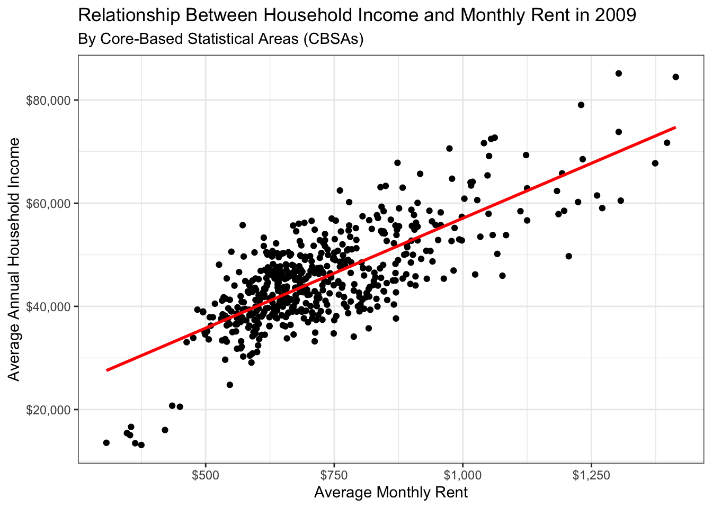
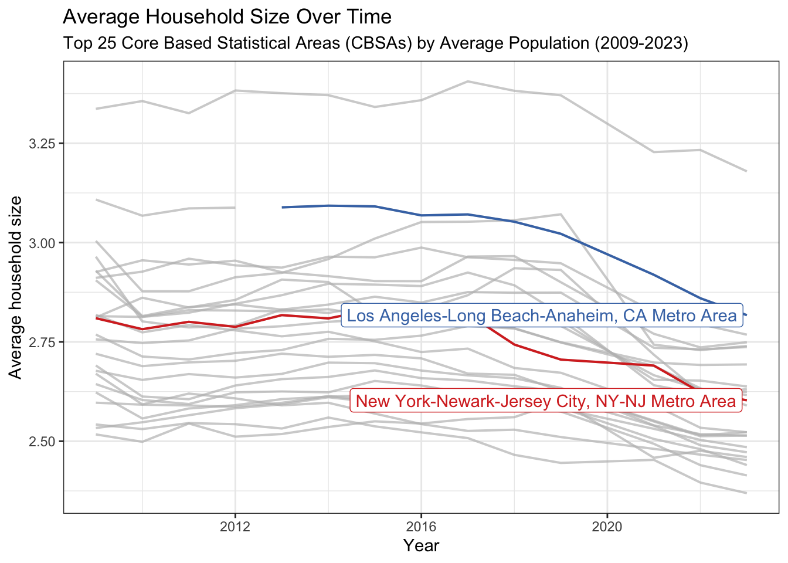
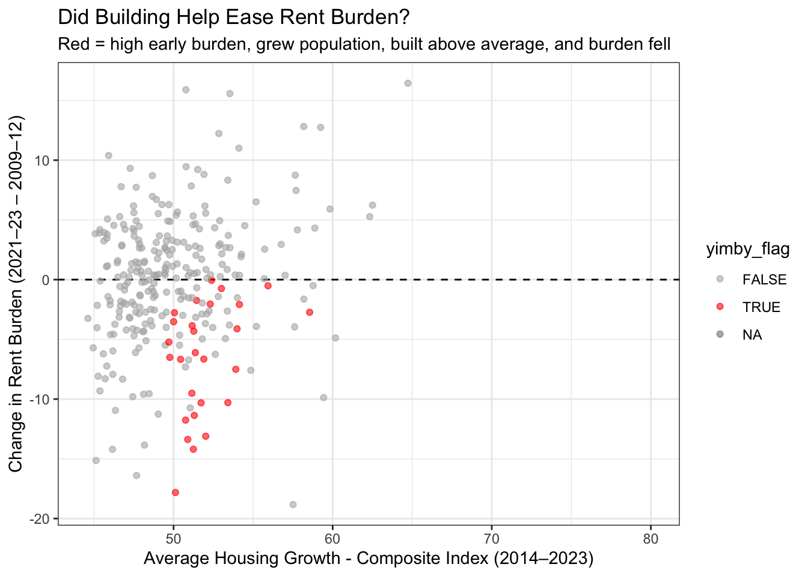
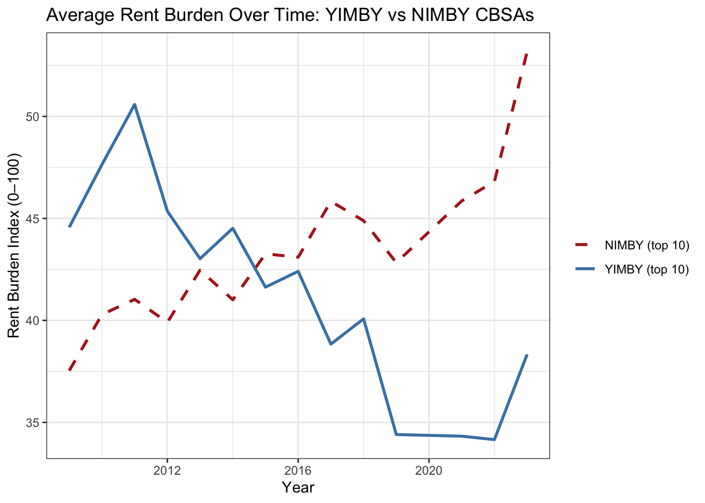

The downloaded binary packages are in
/var/folders/0x/_1vjwvkx4vs1_9zcmlm06xzr0000gn/T//RtmpXvYkAc/downloaded_packagesMini-Project 02 - Making Backyards Affordable for All
Introduction
This project explores how housing costs, household resources, and new construction interact across U.S. Core-Based Statistical areas (CBSAs). In today’s political climate, housing is a big talking-point, and many politicians base a large part of their campaign addressing how they plan to fix the housing crisis in their constituency. I intend to identify areas that are doing well and poorly on the housing front, especially as it related to the rent burden and the housing growth in these areas.
Exploratory Data Analysis
An early exploration of the available data yielded interesting results.
Houston-The Woodlands-Sugar Land, TX Metro Area permitted the largest number of new housing units in the decade from 2010 to 2019 with 482,075 total permits.
Albuquerque, NM, permitted its most new housing units in 2021 with 4,021 units. Note that pandemic-era forces such as record-low mortgage rates line up with a 2021 permitting spike.
DC had the highest average individual income in 2015 at $33,232.88 per year.
The last year that the NYC Core-Based Statistical Area (CBSA) had the most data scientists was 2015 with a total of 18,922.
In NYC, the fraction of total wages earned by people employed in the finance and insurance industries peaked in 2014 at 4.6%.
Finding Relationships
Now, we seek to find relationships between certain variables that can shed light on rents and incomes, employment, and household size.
Rent vs. Average Household Income (2009)

We see a clear positive linear relationship between average monthly rent and average household income in 2009.
Evolution of Average Household Size Over Time

When focusing on the 25 CBSAs with the highest average population from 2009-2023, average household size seems to slightly decrease across these 14 years.
Building Indices
Now we build indices to represent the CBSAs that are experiencing high or low rent burden, and high or low housing growth. These indices will inform which areas are the most “YIMBY”, which impacts policy.
Rent Burden Index
To build this index we found the rent burden for every CBSA and year as annual rent divided by household income. We then compared each CBSA-year to the national population-weighted average rent burden across all CBSAs and years. That gave us a standardized value where the national average is 100. To make the numbers easy to plot and compare, we scaled the standardized values across the whole dataset so that scores range from 0 - 100.
After doing this, we can easily highlight Metro Areas with the highest and lowest rent burdens.
California and Florida stand out as the two states with areas in which rent burden was the highest in 2023. Clearlake, CA boasts the highest rent burden and index (31.2% and 72.9 respectively), while Florida metro areas make up 7 of the top 10. On the opposite side of the spectrum, Laconia, NH had the lowest rent burden and idnex in 2023 (12.7% and 1.6 respectively), with states like Wisconsin and Alabama making up a majority of the bottom 10.
We can now examine how the rent burden in NYC has changed over the years.
Rent burden in the New York Metropolitan area was highest in the early-to-mid 2010s - it first rises in 2011 (22.9%, Index = 40.7) and reaches its peak in 2014, with the index reaching its top value of 41, despite a rise in annual income. That checks out with the post recession pattern of rents recovering faster than incomes. 2021 saw a jump in burden as well, which could possibly be explained by the pandemic/early-reopening period, as rents trended upwards at a faster rate than incomes.
Housing Growth Index (Instantaneous)
We now build an index based on housing growth. This index depends on the absolute population of a CBSA and the number of new housing units permitted that year. This shows us the metros that were “actively building in the moment.” After finding the number of new housing permits per 1,000 current residents, we standardize those values across all metros and years, center and re-scale them on the overall average, and clamp the scores to a 0-100 range. The top 10 CBSAs in 2023 based on this index are as follows:
Myrtle Beach and Salisbury sit at the very top of this instantaneous housing-growth index, meaning that in 2023 they permitted way more homes per 1,000 current residents than the typical U.S. CBSA. The Florida cluster (Punta Gorda, North Port–Bradenton–Sarasota, Cape Coral–Fort Myers, Lakeland–Winter Haven) exemplifies strong in-migration and pro-growth local politics, which makes it easier to turn population pressure into actual permits in a single year. These CBSAs are growing and have room (or rules) to build. For finding the “YIMBY-est” areas, these are the metros that are visibly adding supply, but we still have to check whether rent burden actually eased and whether 5-year population growth was strong.
Housing Growth Index (Rate-Based)
This rate-based index seeks to find if CBSAs built enough for the new people they received by looking back 5 years for each CBSA to measure 5-year population growth. The index as a function of population growth over a 5-year period effectively shows if metros added homes relative to how many new residents arrived.
Springfield, OH leads this index, as it didn’t add a huge number of residents over 2019–2023, but it still permitted a meaningful number of units. Urban Honolulu is interesting for the opposite reason: it’s supply-constrained and every added unit “counts” more, so it looks good on a growth-aware metric. Big, high-demand places like Miami–Fort Lauderdale showing up exemplify expensive, growing metros where permitting has at least tried to keep pace with population pressure.
Composite Index (Rate-Based)
Now we combine the Instantaenous index and Rate-Based index into one Composite index, which takes into account both indexes, giving a little more weight to the Rate-Based index. We can analyse the CBSAs that scored high and low on this index.
Metros near the top exemplify areas that are not just pumping out permits per resident, but are doing it in a way that isn’t wildly out of step with recent population gains. On the flip side, the low-composite metros represent places that are basically just matching a sleepy or stagnant population rather than using housing to enable more growth.
Indentifying YIMBY and NIMBY Cities
We identify YIMBY cities according to the following criteria:
- high rent burden in the early part of the study period;
- decrease in rent burden over the study period;
- population growth over the study period;
- above-average housing growth during the study period.
We score metros that meet this criterion on how well they met it. This gives us our 10 “YIMBY-est” cities.
The cities that do not meet all 4 requirements are ranked on how well they meet the opposite of the criteria, producing the 10 “NIMBY-est” cities.
Now we can see if there is a difference between YIMBY cities and non-YIMBY cities when comparing rent burden changes and average housing growth.

The red points represent cities that met all the criteria to be YIMBY cities. The visualization clearly shows that these cities experienced an allevitaion in rent burden overtime, and added more housing as defined by our Composite Index.
When we average the rent burden over time of our top YIMBY and NIMBY cities, the difference is clear.

Our top YIMBY cities effectively lowered rent burden, while our top NIMBY cities did not. Infact, rent burden increased in these areas.
Policy Brief: Enhanced Housing Laws for Increased Building
Overview
America’s housing crisis has been at the center of political discussions. With rising concerns over immigration, inflation, and layoffs, just to name a few, it is our duty as a nation to protect citizens from dealing with the pressures of housing insecurity.
The Metro-Housing Acceleration Initiative (MHAI) is a federal program that incentivizes local municipalities that adopt pro-housing policies. This initiative will make it easier for such municipalities to permit new housing, allowing for a boost in municipality economy. In response, the government will reward grants to municipalities who not only adopt these new pro-housing policies, but exemplify success in doing so.
Sponsors
Primary Sponsor: Representative from Gulfport-Biloxi, MS Metro Area. With a low rent burden index of 32.2, and a high YIMBY score of .581, Gulfport-Biloxi represents an area that has built housing units at a rate commensurate to its population growth.
Co-Sponsor: Representative from Miami-Fort Lauderdale-Pompano Beach, FL Metro Area. With a high rent burden index of 68.8 and a NIMBY score of .689, Miami-Fort Lauderdale-Pompano Beach is a clear example of a large, high-demand market where housing supply has not kept pace with population and job growth, making it an ideal “needs-based” co-sponsor to argue for federal pro-housing incentives.
Occupations the Initiative will Benefit
Admin, support & waste mgmt
This industry made up a significant portion of both the Gulfport-Biloxi, MS and Miami-Fort Lauderdale, FL workforces in 2023. This initiative strives to protect workers in this industry by keeping rents from eating up their paychecks, so that modest-wage service and facilities staff can actually live near the jobs they support, rather than being pushed farther out as housing tightens.
Accommodation & food services This sector is sensitive to high housing costs since restaurants, hotels, and tourism businesses need a large local workforce that can afford to live close to the popular locations within the area. By pushing cities to add more units, the initiative helps employers in both CBSAs stabilize staffing and helps lower-wage hospitality workers keep more of their income for transportation, childcare, and savings instead of rent.
Metrics to Analyze
Rent Burden measures “housing stress”. It starts from calculating the percentage of annual household income that goes to rent, and comparing that number for every CBSA-year to the national, population average across all CBSA’s in all years. After scaling so that the metric ranges from 0 - 100, a low rent burden indicates that housing is in a good spot, with supply keeping costs in check. A high rent burden means that housing is tight and families are using too much income on rent.
Composite Housing Growth Index measures if a CBSA is actually building. It combines a metric that rewards places that are adding housing in the moment, and a metric that rewards places that are building in proportion to population growth. A high composite housing growth index represents an area that is issuing permits because population is growing. A low composite housing growth index means that an area is not building enough to compensate for a growing population.
Why this Initiative Matters
The Metro-Housing Acceleration Initiative (MHAI) gives Gulfport-Biloxi a way to keep doing what’s already working — steady building, low rent burden — and get federal dollars to lock that in. At the same time, it gives Miami–Fort Lauderdale–Pompano Beach a path to catch up: federal incentives to make it easier to permit, clear metrics to show progress, and political cover to tell residents “we’re building so your rent doesn’t keep rising.” Because the program is tied to transparent measures — Rent Burden (are people paying too much?) and Composite Housing Growth Index (are we actually adding homes?) — Congress can target money to places that both need relief and use the tools. Everybody wins: workers stay closer to jobs, employers get a stabler labor pool, and fast-growing metros don’t have to choose between growth and affordability.